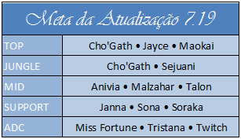
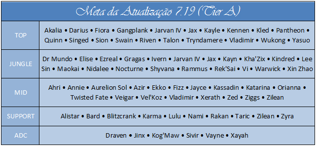

Os Campeões mais fortes do League Of Legends no Patch 7.19
Campeões nerfados e buffados
Nerfs: Janna.
Buffs: Azir, Xin Zhao, Aatrox, Caitlyn, Malphite, Orianna, Ornn, Vayne, Veigar.
Anivia: O grande ofensivo de Anivia, mas é realmente a habilidade de jogar por trás, o que lhe permite ser um grupo de deuses no meio do caminho na fila solo. Os jogadores inimigos têm dificuldade em coordenar um bom mergulho, e Anivia é a rainha da tortura e causa missplays. Como resultado, mesmo que você não ganhe sua pista em todos os jogos, a Anivia torna impossível para as equipes inimigas assediar de forma eficaz, enquanto sua equipe pode cultivar livremente. Isso permite que você ganhe jogos, mesmo que todas as suas faixas sejam perdidas.
Janna: O status de Janna como suporte ao escudo passivo está um pouco acabado, mas ela ainda pode trabalhar nesse papel, se necessário. Enquanto isso, sua capacidade de ser um apoio ofensivo aumentou bastante, resultando em um suporte extremamente versátil que pode desempenhar qualquer estilo que ela desfrute.
Malzahar: Malzahar em seu estado atual é médio em pista, mas absolutamente pós-6 pós-opressivo. Alguns campeões precisam de bola de neve cedo para serem eficazes, mas isso os abre para ganks selvagens e mortes em potencial. Enquanto isso, Malzahar só tem que pressionar o seu melhor, soltar alguns pontos, e de repente a maré do jogo está completamente virada a seu favor. Sua capacidade de destruir tanques e squishies é bastante boa e, como resultado, é difícil de contrariar.
Miss Fortune: Miss Fortune é, sem dúvida, o ad carry mais subestimado no jogo agora. Seu último golpe é uma brisa com seu toque de amor passivo, e ela pode facilmente ficar até mesmo na pista até que ela pegue seu primeiro item de letalidade. Depois disso, se você bateu um único duplo na pista você basicamente ganhou a pista e pode pegar uma vantagem adicional de 10 ~ 15 CS. Enquanto isso, uma vez que as brigas da equipe explodem, ela pode instantaneamente apontar as pilhas completas de Black Cleaver + pilhas de Executioner's Calling em toda a equipe do inimigo. Isso sinergia incrivelmente bem com o grande número de danos de ataque baseados em mid / top / junglers no meta agora.
Twitch: Twitch é sujeito a algum debate, principalmente porque os profissionais tendem a evitá-lo em favor de alguns atiradores auto-descamantes como Xayah e Tristana. Enquanto isso, na fila solo, Twitch ainda é um monstro absoluto. Se o mapa não for bem guardado, um único flanco da Twitch pode derreter equipes inteiras. Enquanto isso, em uma luta 1v1 dada, geralmente o primeiro a atacar vai ganhar. Se o primeiro ataque de Twitch é um golpe crítico da invisibilidade, você provavelmente pode adivinhar quem provavelmente vai ganhar esse.
////////////////// Não deve conexão 7.19. Lamento clã! ///////////////////
Azir: Os azuis de Azir eram realmente muito bons para o imperador, e se você passasse muito tempo a praticá-lo no passado, talvez você queira levá-lo de novo como um intermediário. Ele não é de forma alguma "freelo", mas ele está mais do que valer o peso em lutas de equipe e como um ladrão de pista (desde que você obtenha lágrimas azuis).
Draven: Quando se trata de uma peça competitiva organizada, Draven nunca foi um superstar, pois há contadores óbvios para o kit e ele é um time de campeão direto. No entanto, em fila solo, um bom Draven é quase imparável, especialmente com a Tristana consistentemente sendo banida. Se você vê uma proibição de Tristana e você é um chefe de Draven, então fique certo de que é hora de Draaaaaaaven!
Quinn: Quinn Top é outra dessas monstrosidades de filas individuais que você nunca se torna popular. A letalidade é extremamente boa agora, e quando isso acontece, também é Quinn. O último lustre para Edge of Night significa que os jogadores inimigos terão grande dificuldade em impedir que ele arraste do lado e elimine instantaneamente os principais alvos. Além disso, seu poder de roam durante o jogo é essencialmente Pantheon em esteróides pós-seis.
Xin Zhao: Muitos jogadores estão deixando Xin Zhao, mas ele não sente que está em um lugar horrível agora. Na verdade, ele parece mais forte do que ele foi pré-patch e seus números mostram isso mesmo com a taxa de jogo aumentada. Ele é um pouco mais complexo para jogar, mas não tanto que o torna difícil.